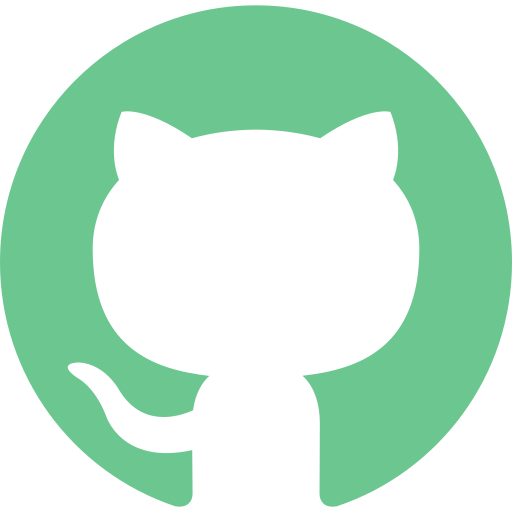
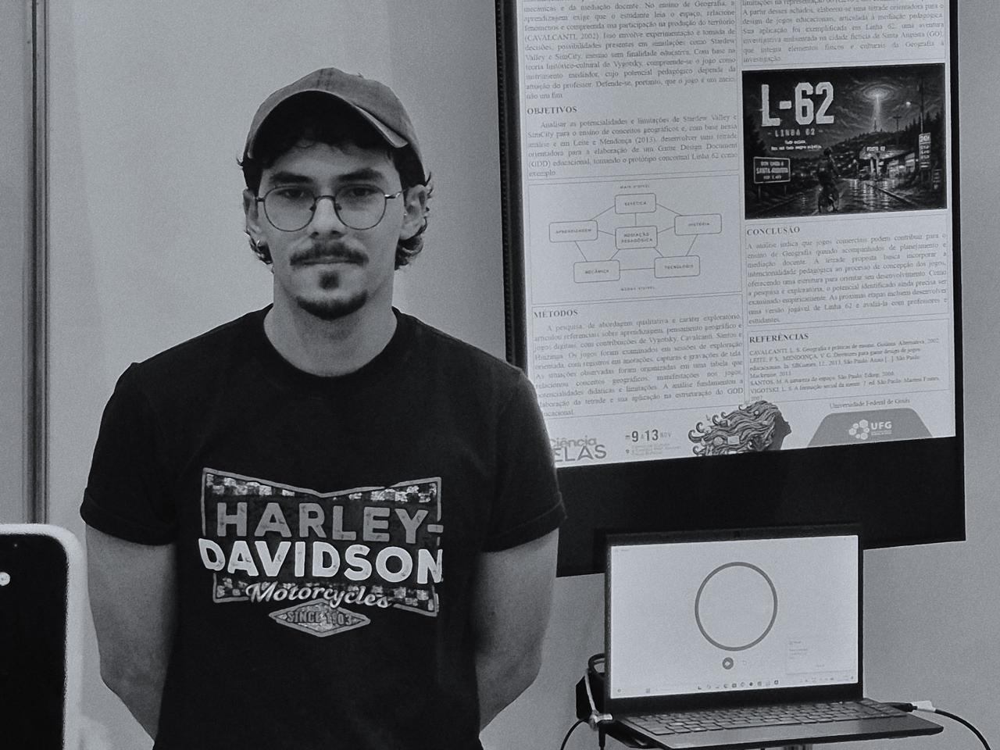

Customer Success (CS)
Construção de relacionamentos, acompanhamento da jornada e geração de valor.
Ferramentas · CS
- HubSpot CRM
- Salesforce
- Intercom
- Zendesk
- Gainsight
- Jira
Aberto a estágio e vagas júnior
Pedro Albuquerque
Tecnologia, relacionamento e qualidade de produtos digitais.
Construção de relacionamentos, acompanhamento da jornada e geração de valor.
Análise de requisitos, planejamento de testes e melhoria da qualidade de software.
Projetos em destaque
Projetos práticos e estudos de caso em Customer Success e Quality Assurance, com foco na resolução de problemas, aplicação de ferramentas e desenvolvimento profissional.
Identifica clientes que apresentam sinais de insatisfação ou risco de cancelamento e propõe ações preventivas.
Ver estudo de caso →
Testar uma aplicação real de demonstração, identificar defeitos e produzir documentação profissional de QA.
Ver estudo de caso →Cria uma jornada de integração de novos clientes, com etapas, comunicação, acompanhamento e indicadores de sucesso.
Ver estudo de caso →Automatizar os principais fluxos de uma aplicação web, executando testes e documentando os resultados.
Ver estudo de caso →Sobre mim
Minha trajetória reúne experiências em educação, tecnologia, pesquisa e desenvolvimento de projetos. Atualmente, foco em Customer Success e Quality Assurance, buscando entregar produtos e serviços digitais mais eficientes e humanos.

Level 5 Jr.
Universidade Federal de Goiás
Grupo Salta Educação
Grupo Salta Educação
Grupo Salta Educação
Gaia Consultoria Ambiental Jr.
Laboratório de Geoprocessamento – LAPIG
Universidade Federal de Goiás
Contato
Estou aberto a oportunidades de estágio e posições júnior em Customer Success e Quality Assurance.